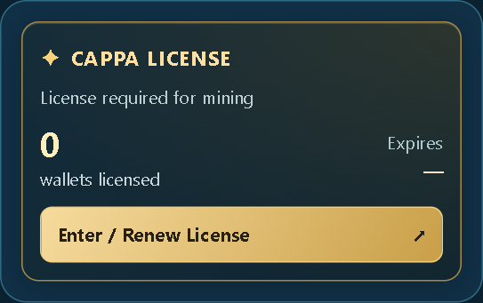
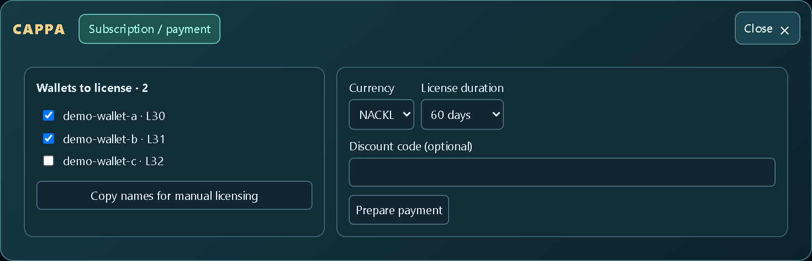
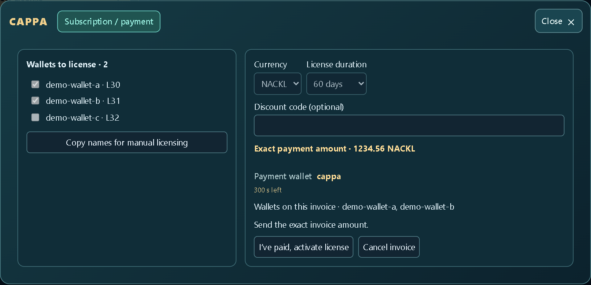
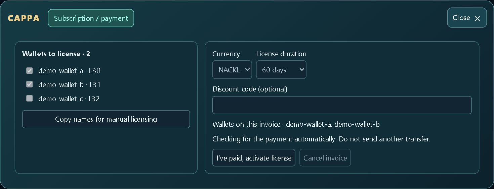
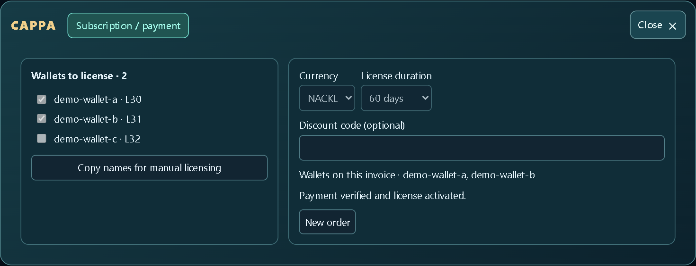
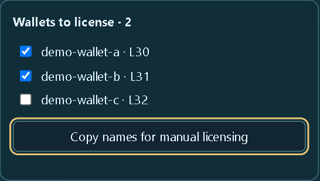

CAPPA Eagle lisans rehberi
Windows için v1.1.1. NACKL veya SHELL ile ödeme ve manuel lisans alma adımları.
Ekran görüntülerinde örnek cüzdanlar ve tutarlar kullanılıyor. Ödeme için kendi uygulamanda açılan faturayı esas al.
1. Lisans ekranını aç
Sol üstteki CAPPA logosuna tıkla. Açılan menüde CAPPA lisans kartından “Lisans Al / Yenile”yi seç. Ödeme yapmak için “Abonelik / ödeme” sekmesini aç.

2. Cüzdanları, para birimini ve süreyi seç
Lisans almak istediğin cüzdanları işaretle. İşareti kaldırmak cüzdanı yalnızca bu faturadan çıkarır. Bir faturaya en fazla 200 cüzdan eklenebilir. NACKL veya SHELL seç. Otomatik ödeme için 30, 60, 90, 120, 150 veya 180 gün seçilebilir. Yenilemeden sonra bir cüzdanın kalan toplam süresi 180 günü geçemez. Varsa indirim kodunu gir ve “Ödemeyi hazırla”ya bas.

3. Faturadaki tutarı aynen gönder
Fatura açılınca seçili cüzdanları, para birimini, alıcıyı ve kesin tutarı kontrol et. Uygulamada gösterilen ödeme cüzdanına, seçtiğin para birimiyle, iki ondalık hanesi dâhil tutarı tam olarak gönder. Ödeme, 5 dakikalık sayaç bitmeden alıcıya ulaşmalı. Alıcı doğrulanamadıysa veya sayaç bittiyse yeni transfer başlatma.

4. Ödemeyi yaptığını bildir
Transferden sonra “Ödemeyi yaptım, lisansı işle”ye bas. Onay yaklaşık 10 dakika sürebilir. Ağ gecikirse daha uzun sürebilir. Zamanında ulaşan ödeme sayaç sıfırlandıktan sonra da doğrulanabilir. Durum beklemedeyken yeniden para gönderme.

5. Onayı kontrol et
“Ödeme doğrulandı, lisans işlendi” mesajını gördüğünde fatura tamamlanmıştır. Lisans kartından lisans durumunu ve lisanslı cüzdan sayısını kontrol edebilirsin. Lisans cüzdan adına tanımlanır.

6. Manuel lisans al
“Abonelik / ödeme” ekranında istediğin cüzdanları işaretle. “Manuel lisans için isimleri kopyala”ya bas ve listeyi CAPPA’ya gönder. Manuel lisans talebi için yalnızca cüzdan adlarını paylaş.
